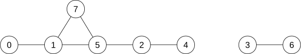

Licenca
To delo je na voljo pod pogoji slovenske licence Creative Commons 2.5:
priznanje avtorstva - nekomercialno - deljenje pod enakimi pogoji.
Celotna licenca je na voljo na spletu na naslovu http://creativecommons.org/licenses/by-nc-sa/2.5/si/. V skladu s to licenco je dovoljeno vsakemu uporabniku delo razmnoževati, distribuirati, javno priobčevati, dajati v najem in tudi predelovati, vendar samo v nekomercialne namene in ob pogoju, da navede avtorja oziroma avtorje in izdajatelja tega dela. Če uporabnik delo predela, kar pomeni, da ga spremeni, preoblikuje, prevede ali uporabi to delo v svojem delu, lahko predelavo dela ponudi na voljo le pod pogoji, ki so enaki pogojem iz te licence oziroma pod enako licenco.

Primeri uporabe množice
Vaja
Napiši in preizkusi funkcijo VseCrke(niz), ki vrne tabelo vseh črk, ki se vsaj enkrat pojavijo v podanem nizu. Tabela naj bo urejena po abecedi. Niz vsebuje samo male črke angleške abecede in presledke.
Sorodniki, prijatelji, sošolci, učitelji, sosedje, ... Gotovo poznaš vsaj kakih 100 ljudi. Sedaj pa si poskušaj predstavljati, koliko ljudi lahko »dosežeš« po dveh korakih; torej, kolikšno je skupno število znancev vseh tvojih znancev. Če ti to še ni dovolj, poskusi še s tremi koraki, torej z znanci znancev znancev. Če bi tako nadaljeval, bi po kakih šestih ali sedmih korakih poznal že večino sveta. V naslednji nalogi se bomo ukvarjali s podobnim problemom: zanimalo nas bo, katere osebe lahko podana oseba doseže po poljubnem številu korakov, če vemo, kateri ljudje se med sabo (neposredno) poznajo.
*Primer 3
Podanih je n oseb, oštevilčenih z indeksi 0, 1, ... , n−1. Tabela poznanstva podaja poznanstva med osebami. Prvi element tabele je množica indeksov oseb, ki so znanci osebe z indeksom 0, drugi element podaja indekse znancev osebe 1 itd.
Napiši funkcijo Dosegljive(poznanstva, oseba), ki za podano tabelo poznanstev in za podani indeks osebe vrne množico indeksov vseh oseb, ki so preko poljubno mnogo (vštevši 0) poznanstev »dosegljive« od podane osebe. Vrnjena množica mora torej vsebovati indeks podane osebe, indekse vseh njenih znancev, indekse vseh znancev njenih znancev itd.
Oglejmo si primer. Recimo, da velja n = 8 in da ima tabela poznanstva takšno vsebino:
[ set([1]), set([0, 5, 7]), set([4, 5]), set([6]), set([2]), set([1, 2, 7]), set([3]), set([1, 5]) ]
To pomeni, da je edini znanec osebe 0 oseba 1, znanci osebe 1 so osebe 0, 5 in 7 itd.:

Množico oseb, dosegljivih od podane osebe (imenujmo jo dosegljive), gradimo postopoma. Ustvarimo jo kot prazno množico, nato vanjo dodamo podano osebo (dejansko njen indeks, a tega v nadaljevanju ne bomo več pisali), nato vse njene znance, nato vse znance njenih znancev itd. Postopek ponavljamo tako dolgo, dokler se množica dosegljive povečuje. Da se izognemo nenehnemu obravnavanju istih oseb, v vsakem koraku upoštevamo le tiste osebe, s katerimi smo množico dosegljive v prejšnjem koraku obogatili — torej osebe, ki jih pred prejšnjim korakom v množici še ni bilo. Oglejmo si postopek na primeru, ko nas zanima množica oseb, dosegljivih od osebe 0: